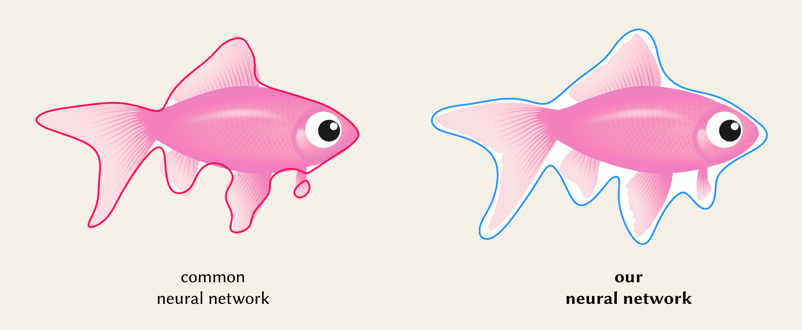

In addition to Ours Neural, our approach can also optimise non-neural representations such as k-DOP, which we call Ours kDOP. The interactive demo below uses 2D point queries to show a comparison of our methods: Ours Neural and Ours kDOP, shown in bold, vs. six baseline methods, on four different objects:

Input is an \(n\)-dimensional indicator function \( f(x) ∈ R^n → \{0,1\} \) that returns 1 inside and on the surface of the object, and 0 everywhere else. To support both point and range queries, on top of the indicator function \( f(x) \), we define a query function \( g(r) ∈ R^n → \{0,1\} \) that is 1 if the indicator function returns 1 for at least one point in the region \( r \). We then approximate \( g(r) \) using another function \( h_{\theta}(r) \) with learnable parameters \( \theta \). The training objective \( L \) is no cost if \( g(r) = h_{\theta}(r) \), otherwise asymmetric costs are applied if false negative: \( g(r) = 1 \) and \( h_{\theta}(r) = 0 \), or false positive: \( g(r) = 0 \) and \( h_{\theta}(r) = 1 \). We approximate \( L \) via a variant of a weighted binary cross entropy loss.
In our implementation, we use small MLPs (Multi-Layer Perceptrons) to achieve faster training and inference. For 2D data, we sample images; for 3D, voxel grids; and for 4D, animated objects represented as 3D voxel grids stacked in 4D tensors.

We show that our methods generalise across dimensions. Here, we show results for 3D point queries, compared to baseline methods.
We introduce a variant of our approach that inverts the asymmetric costs associated with false negatives and false positives. Contrasting with our original approach that includes both definite and potential areas, this variant includes only areas that are definitively inside the object, excluding ambiguous regions. This is useful for tasks like sphere tracing where avoiding boundary overestimation is important.
In the following interactive demo, we explore these two types of conservativeness - hit conservativeness, which is the original approach and no-hit conservativeness, which is the variant approach. We show that these two types of conservativeness can be applied in the optimisation of both neural (Ours Neural) and non-neural (Ours kDOP) representations:
We show that we can also stack our neural boundings into hierarchies, similar to classic bounding boxes in bounding volume hierarchies (BVH).
The results show that 1) our neural BVH does not cut off any geometry features and is fully conservative 2) each level in our neural BVH bounds its object group tightly 3) each level is more tight-fitting compared to classic bounding boxes, achieving improved accuracy over traditional BVH.
@inproceedings{liu2024neural,
author = {Stephanie Wenxin Liu and Michael Fischer and Paul D. Yoo and Tobias Ritschel},
title = {Neural Bounding},
booktitle = {Proceedings of the Special Interest Group on Computer Graphics and Interactive Techniques Conference Papers '24 (SIGGRAPH Conference Papers '24)},
year = {2024},
location = {Denver, CO, USA},
publisher = {ACM},
address = {New York, NY, USA},
pages = {10},
doi = {10.1145/3641519.3657442}
}